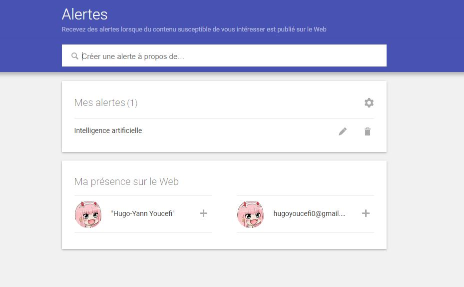

Personnel est un projet d'application en Java effectué lors de ma deuxiéme anné de BTS.
Celle ci Permet de gerer des Ligues ainsi que leurs membres en fournissant des droits a des administrateurs de ligue dans le contexte de de la M2L.
Objectif
Cette application, n’existe qu’en ligne de commande et est mono-utilisateur. Nous devions désigner un administrateur par ligue et lui confier la tâche de recenser les employés de sa ligue. Une partie du travail est déjà faite mais nous avons du le compléter.
Specification du besoin
Un simple employé de ligue peut ouvrir l’application et s’en servir comme un annuaire, mais il ne dispose d’aucun droit d’écriture.
Un employé par ligue est admininstrateur et dispose de droits d’écriture peut gérer la liste des emloyés de sa propre ligue avec une application bureau.
Le super-admininstrateur a accès en écriture à tous les employés des ligues. Il peut aussi gérer les comptes des administrateurs des ligues avec une application accessible en ligne de commande.
Le super-admininstrateur a accès en écriture à tous les employés des ligues. Il peut aussi gérer les comptes des administrateurs des ligues avec une application accessible en ligne de commande.
L’application doit être rendue multi-utilisateurs grace à l’utilisation d’une base de données.

L'intelligence artificielle (IA) représente une discipline informatique passionnante qui vise à créer des systèmes capables de réaliser des tâches qui nécessitent généralement l'intelligence humaine.
Elle englobe un large éventail de techniques et d'applications, transformant la manière dont nous interagissons avec la technologie au quotidien.